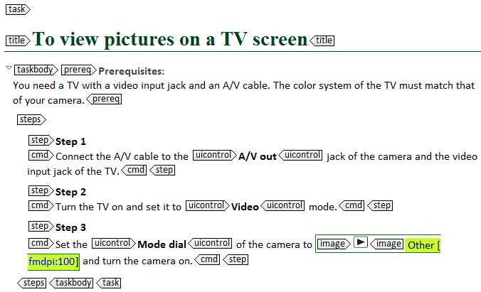

---
# Generated from DITA source
layout: default
title: "Introducing the task: context and prereq"
index: "../toc.html"
---
Introducing the task: <context> and <prereq>
Before you start describing the task itself, you might want to add some introductory information. To do so, you can use the <context> and the <prereq> element. Both elements are optional: a task topic is perfectly valid without them.
<context>
You use the <context> element to add some background information to the task. For example, to explain the benefits of performing the task or specify when the user should preform the task.
Note: You can also use the <context> element at the beginning of a task to briefly explain a concept. However, you can only do this when the concept is relatively simple and if it is only used in this one task. If the concept is complex or used in several topics, you have to describe it in a separate concept topic and link that concept topic to the correct task topic(s).
<prereq>
In the <prereq> element, you can list all the prerequisites of the task. This includes everything the users needs to know or do before they can start executing the task. For example, list the tools that the users need, the information that they have to gather first or the software that should be installed on their computer.
